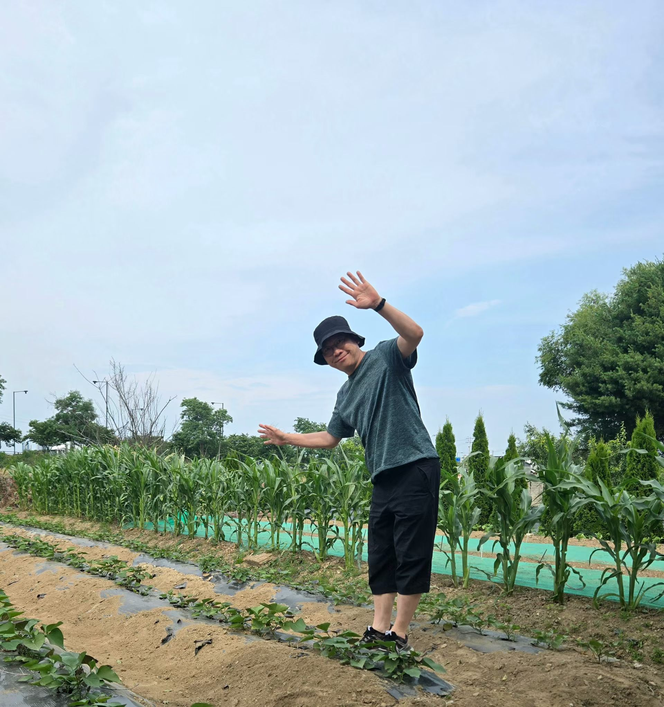

About
Kept when a day is worth it
Tony Shin is a photo journal of ordinary days. Harvests, a kitchen sink, a short clip, an afternoon that went well. A new frame is added from time to time, not on a schedule.
The first frames are from the summer of 2026. They are small on purpose. The point is to look back and remember what the season actually felt like.

There is no feed and no comments. Just the days, newest first, whenever there is something worth keeping.